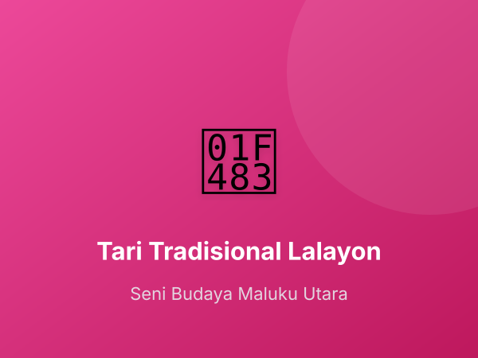

Pengembangan Diri
Program Ekstrakurikuler

Wajib
Gerakan Pramuka (Gugus Depan)
Melatih kemandirian, kedisiplinan, kerja sama, dan kecintaan pada alam. Pramuka merupakan kegiatan ekstra wajib bagi siswa kelas 3 s/d 6.
Sabtu, Pukul 14.00 - 16.00 WIT

Pilihan
Dokter Kecil & UKS
Membekali siswa dengan pemahaman kesehatan dasar, P3K, pola hidup bersih sehat (PHBS), serta pembinaan lingkungan sehat sekolah.
Rabu, Pukul 15.00 - 16.30 WIT

Pilihan
Klub Olahraga (Sepak Bola & Bulu Tangkis)
Mengembangkan ketangkasan motorik siswa dan menyaring bibit unggul untuk kejuaraan O2SN tingkat kabupaten dan provinsi.
Selasa, Pukul 15.30 - 17.00 WIT

Pilihan
Seni Tari Tradisional Maluku Utara
Melestarikan kebudayaan daerah melalui tari tradisional seperti Tari Lalayon dan Soya-Soya. Melatih keselarasan gerak dan estetika seni.
Kamis, Pukul 15.00 - 17.00 WIT